| 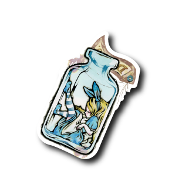 | 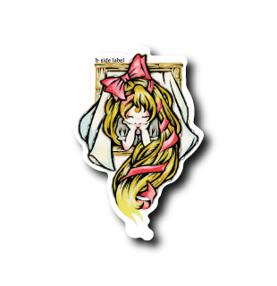 | 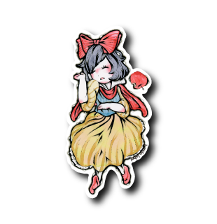 | 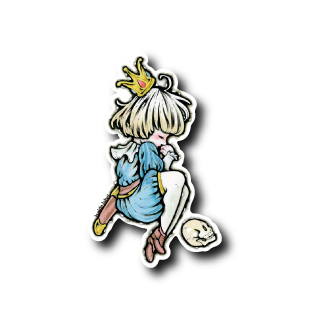 |
瓶アリス |
ラプンツェル(ピンク) |
メルヘン白雪姫(目閉じ) |
メルヘン王子様(右向き) |
| 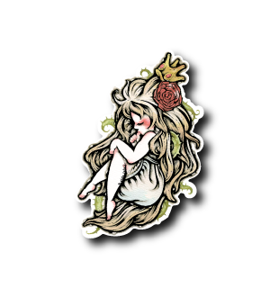 | 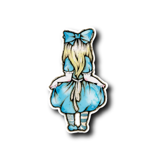 | 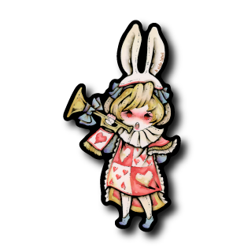 | 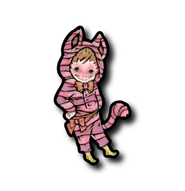 |
眠り姫(赤) |
うしろアリス(青) |
お遊戯ウサギ(歯有り) |
お遊戯チシャネコ(緑) |
| 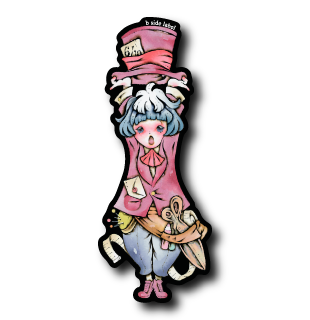 | 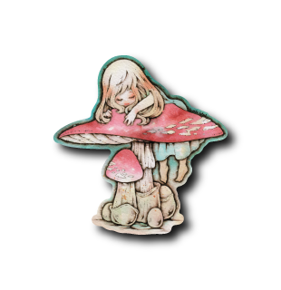 | 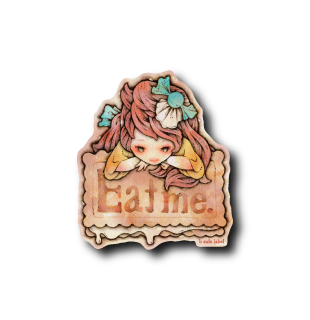 | 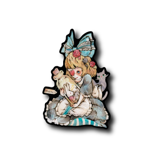 |
お遊戯ハッタ―(青) |
キノコ乗り女子 |
Eat me. |
ゴスロリアリス(クモの巣) |
| 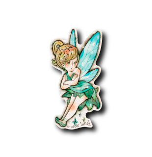 | 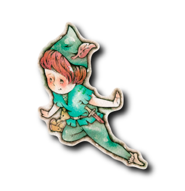 |
ティンク(青) |
ピーターパン(青) |